Welcome
The Pre-Spring/Summer 2024
A alfaiataria exclusiva é nítida, cortada rente ao corpo, rigorosa e emendada, em tecidos tradicionais de moda masculina - listra matinal, grão de poudre, xadrez Príncipe de Gales de pele de tubarão e lã de sarja de cavalaria. Detalhes utilitários: bolsos em camisas de algodão e lã e gabardinas. Os couros com espartilho e de motociclista com franjas coladas ganham destaque nos clássicos preto, prata e dourado. Detalhes oversized de laço e nó e botões de nó prendem os vestidos ao corpo, uma homenagem ao ateliê de alta costura, com corte inferior. Estampas florais, jacquards e bordados são retrabalhados a partir de pinturas dos Antigos Mestres: claro-escuro, tecidos e apliques. Os sapos de cristal e os bordados em corrente são inspirados em trajes cerimoniais.
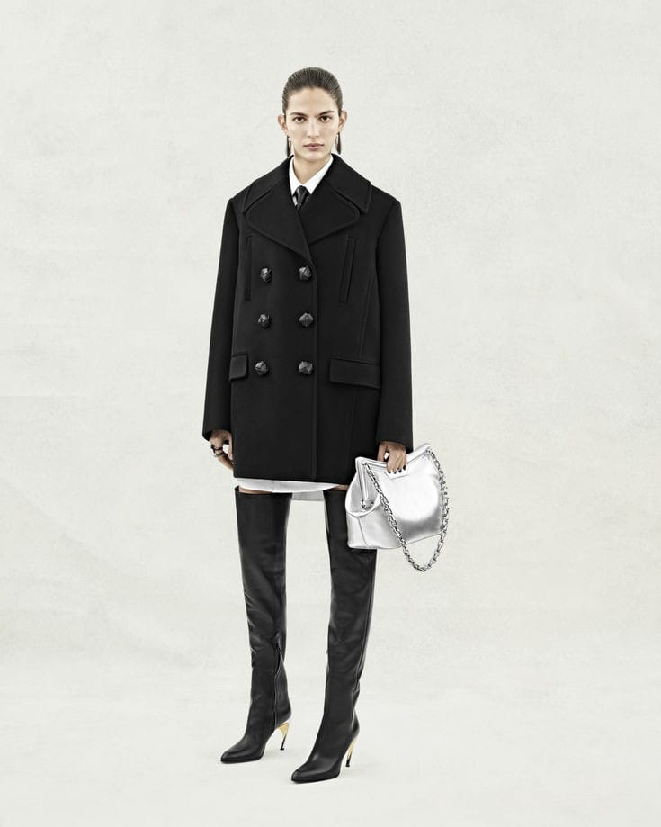 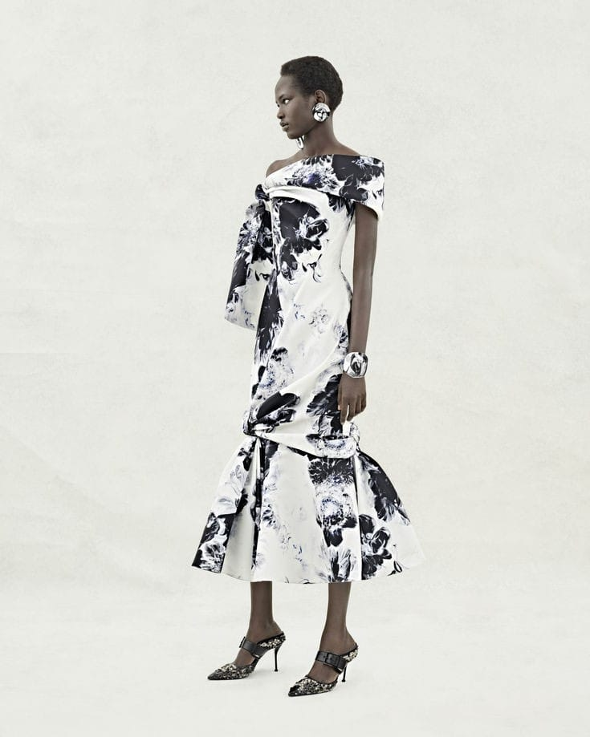 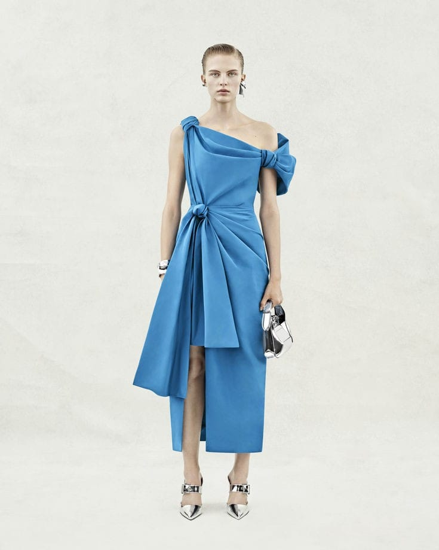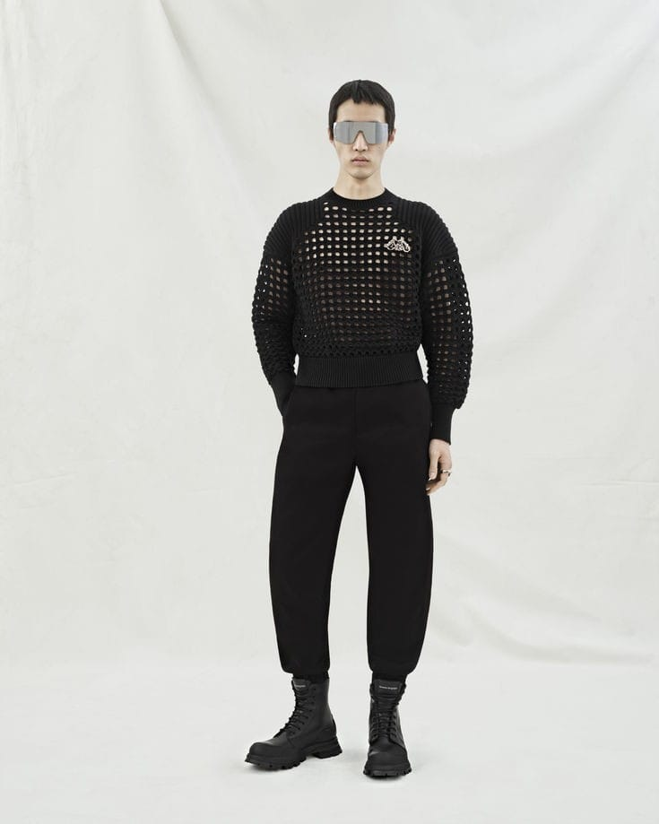 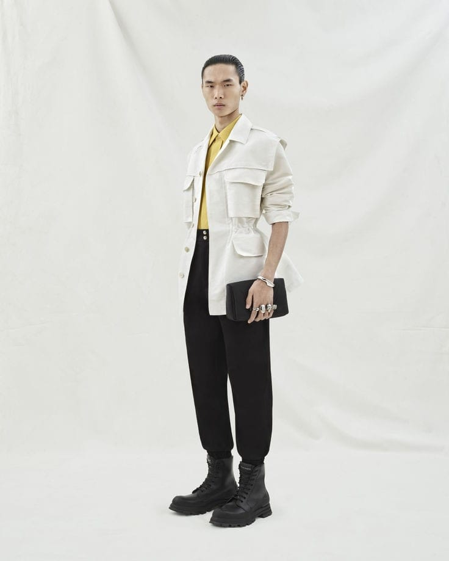
The Autumn/Winter 2023
A coleção feminina outono/inverno 2023. Fotografado por Jet Swan. “Anatomia humana, a anatomia das roupas, a anatomia das flores. Uma exploração da beleza e do poder através da alfaiataria e dos tecidos de alfaiataria e com foco no corte, proporção e silhueta. Os fundamentos da moda, cortados no corpo e inspirados no corpo interior. O clássico subvertido: virado do avesso e de cabeça para baixo. O volume é limpo – estrito – ou explodido. As roupas são dissecadas: cortadas, fatiadas e torcidas. Os ombros são fortes. As cinturas são estreitas. Calças de salto alongam a perna: o bumster ao contrário. O motivo mais proeminente da coleção é a orquídea, cultivada nas suas formas mais raras, mas, depois da margarida, a flor mais comum. Ela prospera no ar, resiste ao enraizamento e cresce na natureza. Extraordinariamente bela e infinitamente adaptável, a orquídea imita tanto o predador quanto a presa. Na linguagem das flores, a orquídea é um símbolo de amor.”
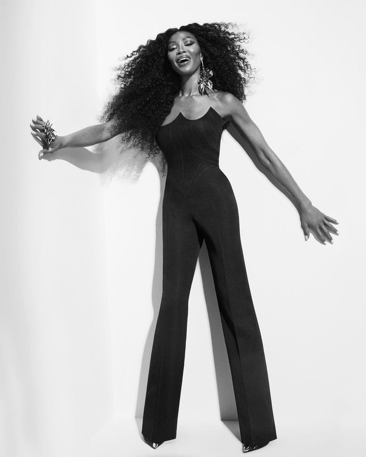 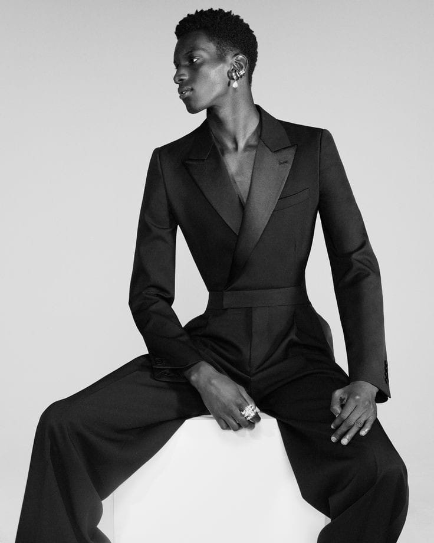 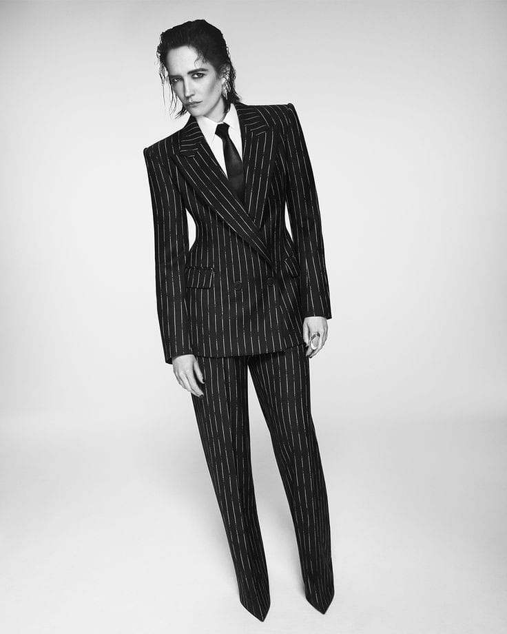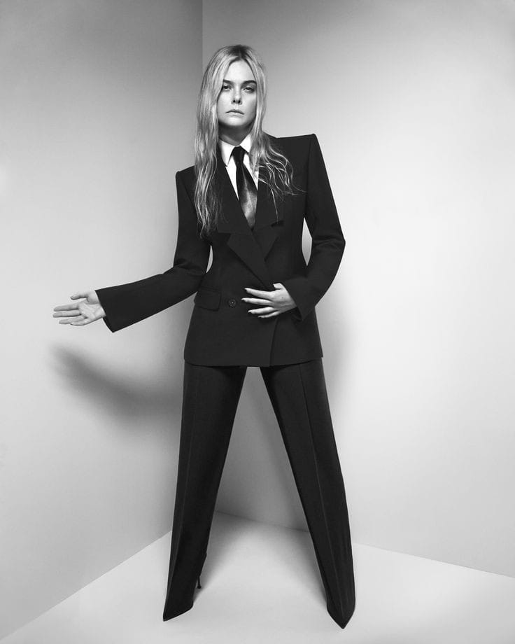 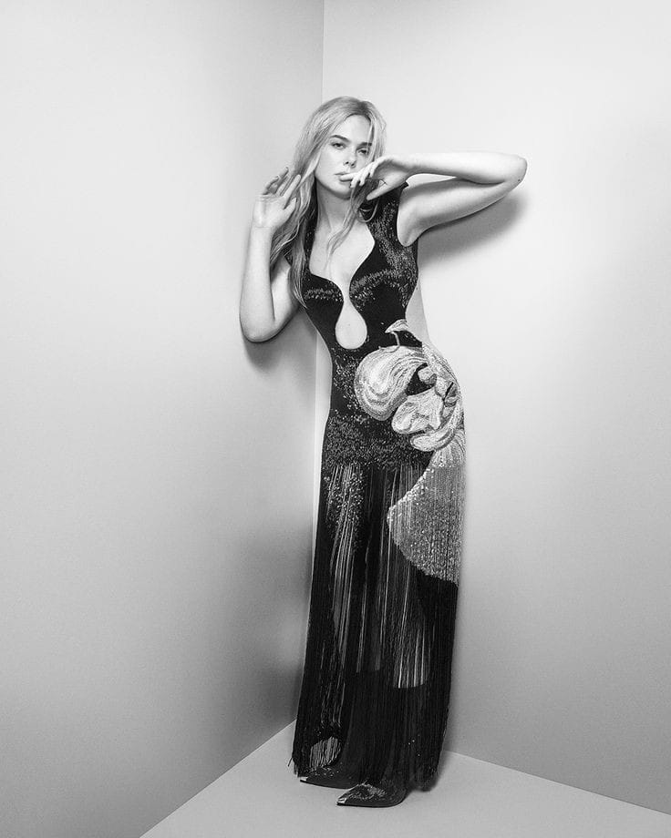
The Jewelled Hobo
A coleção de bolsas femininas Alexander McQueen combina materiais nobres e detalhes exclusivos. Desde as novas bolsas Seal and Peak até a família Knuckle e bolsas Skull instantaneamente reconhecíveis – descubra bolsas de ombro, bolsas crossbody, clutches, sacolas e muito mais.
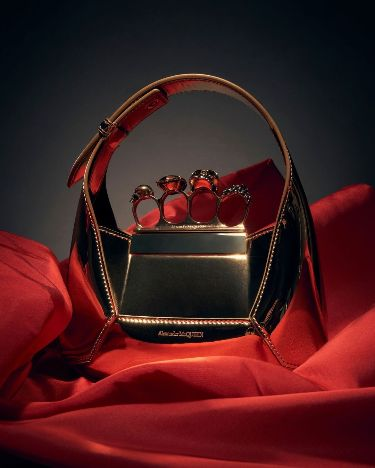 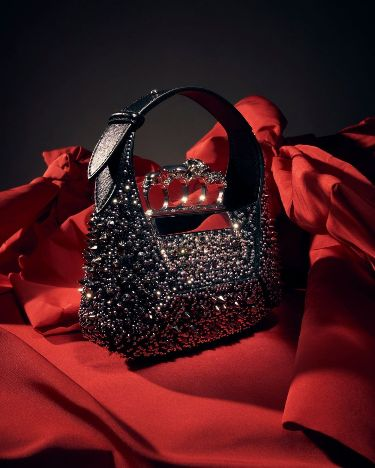 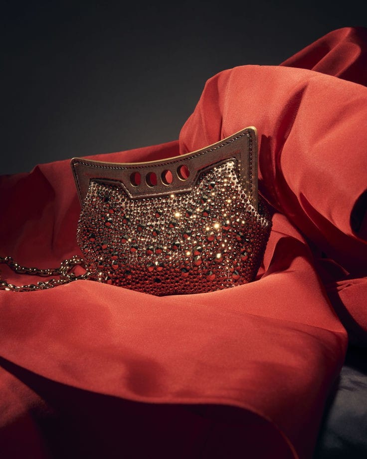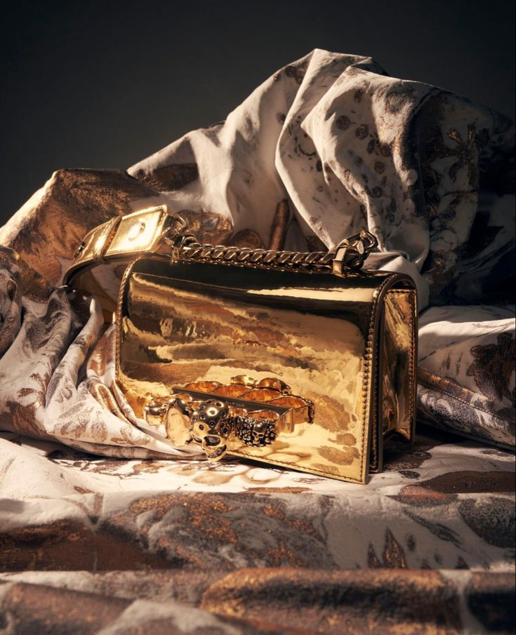 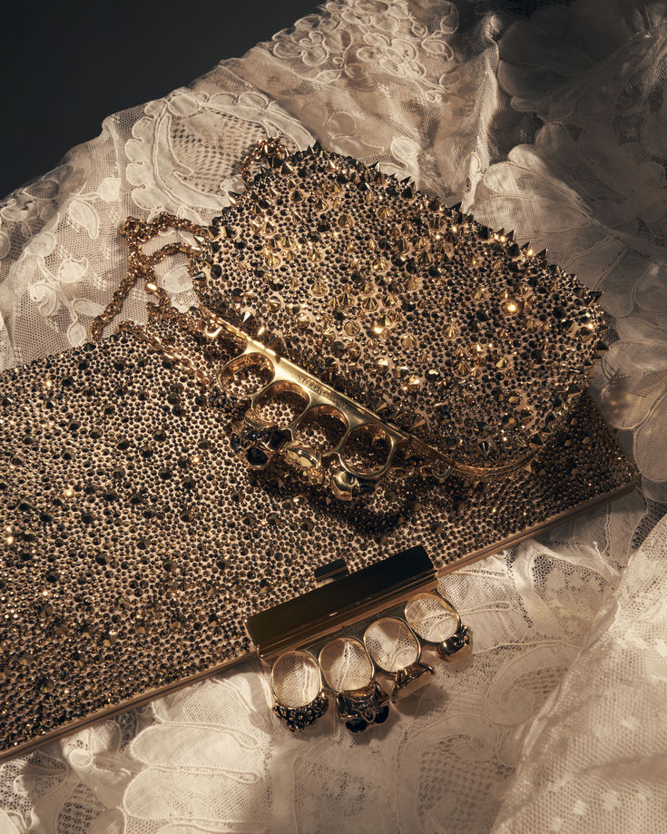
“Você tem que conhecer as regras para poder quebrá-las. E estou aqui pra isso, pra demolir as regras, mas manter a tradição.” - Alexander McQueen